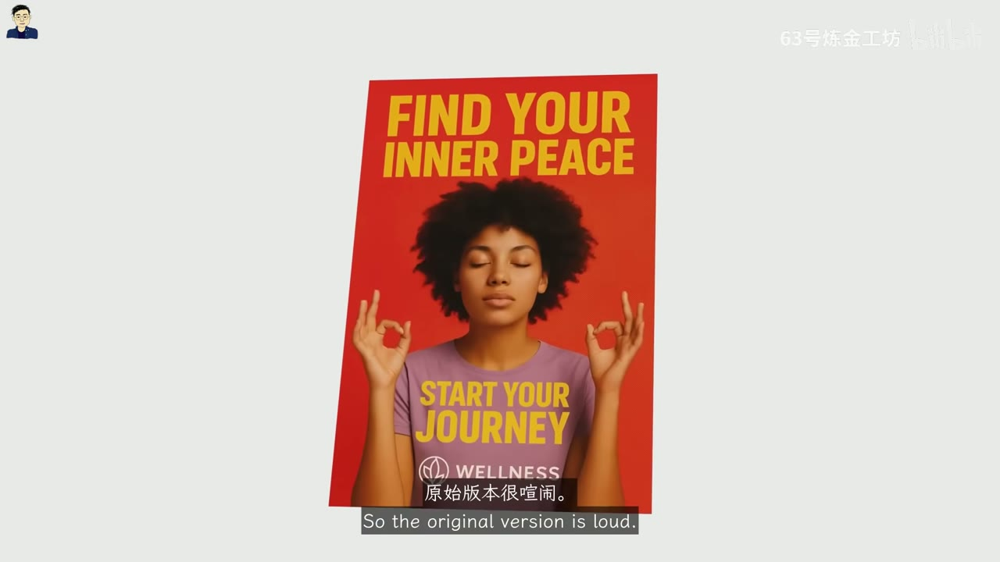

原视频 · 在线回看
点击后联网加载 B 站播放器；本地不下载整段视频。

原视频 · 在线回看
点击后联网加载 B 站播放器；本地不下载整段视频。
来源：Satori Graphics｜学高阶设计思维，看这一部就够了
UP 主：63号炼金工坊 · 时长：10 分 08 秒 · 阅读强度：深度
做完一张海报后，我们很容易盯着颜色、字体和细节，反复问自己：这样好看吗？这个问题当然有价值，但它还没有告诉我们，别人究竟读到了什么。也许最重要的消息很安静，装饰却抢走了所有注意；也许我们想邀请对方参与，对方却完全没注意到该怎样继续。
所以，评价设计时可以再问得具体一点：视线最先落在哪里？第二个被看见的是什么？哪些内容完全被忽略？我们原本想让人理解的内容，与对方实际理解的内容之间，可能存在差距。Satori Graphics 把这种差距称为 perception gap，可以理解为“表达意图与实际感知之间的差距”。
这件事可以通过一个简单方法观察。把版面展示给别人看几秒，再请对方说出自己记住了什么，以及先后顺序。此时不急着追问小字或装饰细节，先听他怎样组织刚才看到的东西。如果他先记住了次要信息，我们就需要检查重要信息是否具有足够清楚的视觉位置。
所谓“视觉层级”，就是用大小、位置、对比和间距等安排，帮助人分辨内容的重要程度与阅读顺序。层级发挥作用时，观众不必逐项猜测哪部分最重要。如果我们希望对方看完介绍后采取某个行动，这个行动的入口也需要进入阅读路径。它虽然放在页面上，却一直没被注意到，沟通就还没有完成。
这样的观察，让我们可以从“我喜欢这种风格”继续往前讨论。人们对颜色和字体的偏好会不同，但某条重要消息有没有被看见，可以通过实际反应来检查。当然，几秒测试适合检查第一印象和优先顺序，无法代替所有设计评价。复杂图表需要更长阅读，具有探索性的作品也可能有意让人停留。判断时仍然要看这张设计承担什么任务。
接下来再把观众放回真实情境。一个人打开慈善网站时，可能比较谨慎，正在判断这个组织是否可信、自己的支持会用到哪里。另一个人轻松翻阅时尚杂志，可能只是随手浏览，并没有准备认真研究每条信息。两个人看到设计之前，已经带着不同的问题和注意力状态。
如果我们只关心“这张图要说什么”，很容易漏掉这种差别。慈善网站需要理解来访者的顾虑，帮助他逐步形成信任；时尚杂志中的广告则可能使用大胆的图像、强烈的对比和清楚有力的字体，在快速翻页中争取一次停顿，让人产生兴趣或向往。这些选择与观看情境有关，不能只根据设计师个人偏好决定。
这里也没有“所有慈善设计必须柔和”或“所有时尚广告必须强烈”的固定答案。我们需要先提出关于受众的合理判断，再看实际沟通是否支持这个判断。重要的问题是：这个人在看到设计之前，已经在想什么、担心什么，又愿意投入多少注意力？让设计从这个起点开始，消息才比较容易被接住。
同一个项目，可以通过一份没有背景说明的 PDF 发出去，也可以先让对方知道问题是什么，再沿清楚的顺序展示思路与结果。项目内容可能没有改变，接收者理解它所需的努力却不同。后一种情况下，对方更容易知道自己在看什么，以及每个选择为什么出现。
文件本身也有类似差别。打开以后，内容排列混乱、命名含糊，接手者就需要先做一轮猜测；组织清楚、名称明确，他就能更快找到要用的东西。作品集的打开方式、提案最初几秒的节奏、交付文件是否容易继续使用，都会参与整体体验。专业感在这些细小的接触中逐渐形成。
这就是“感知创造价值”在这个情境中的含义。客户既在评价最终外观，也在感受合作是否清楚、是否省心，以及自己能否有把握地使用结果。我们把作品周围的体验做好，并没有凭空改变作品内容，却能减少别人理解和接手时的困难。
还要记得，真实观众很少处于设计师精细检查作品的状态。他可能深夜拿着手机，已经有些疲倦，屏幕亮度也很低。他通常不会放大页面逐像素看字距。设计面向的是这样一个注意力有限的人，重要内容需要在实际观看条件下仍然容易找到和理解。
知道观众现在的状态之后，还可以多想一步：他接触这张设计几秒后，会变得更安心、更好奇，还是觉得受到催促？这里讨论的 predictive empathy，即“预测性的共情”，指的就是提前考虑这种情绪变化。它是一种设计思考方式，帮助我们把视觉选择与预期感受联系起来。
下面两版海报都围绕寻找内心平静。第一版使用鲜明的红色背景、黄色大字和较强的字体力度，人物则闭着眼，保持平静的姿态。整张画面很容易抓住注意力，但标题像在提高音量。如果来访者还没有准备投入，它也可能让人感到被催促：现在就注意我，现在就开始。
第二版保留人物和基本主题，换成较柔和的背景与配色，降低文字的压迫感，增加周围空间，并加入小型图形与更温和的文字安排。我们仍然能够知道它在邀请人开始一段旅程，但邀请的语气改变了。设计想让观众更容易进入一种被理解、可以放松的感受。
比较时，需要把颜色、字体、留白和人物放在一起看。单独拿出一种颜色，不能保证它让所有人安心；同样，强烈的视觉也不必然有问题。第一版还可以有另一种合理解读：外界很喧闹，人物正在喧闹中找到自己的平静。这个解释保留了强烈画面，也让强烈画面与主题产生联系。
因此，两版对照真正帮助我们提出的，是“我希望观众怎样理解这些元素之间的关系”。如果目标是轻柔邀请，第二版更贴近这个方向；如果目标是表现混乱与平静的对照，第一版也有可讨论的理由。具体选择需要放回主题和受众情境，不能脱离目的给一种风格判定高低。
接下来的问题是：观众离开之后，还能记住什么？一张画面可以很整洁、很熟练，却没有留下一个鲜明的意思。这里用“记忆编码”讨论设计怎样给人留下可以回想的内容，重点是观察视觉概念如何帮助理解与记忆，无需把它理解成一条保证记住的心理学公式。
先看 High Fidelity 海报。画面用了两张黑胶唱片与一张唱片封套。如果只是把这些物品排整齐，我们会知道它与音乐有关；现在，两张圆形唱片构成上方的两个弧面，斜放的封套形成下方尖角，几个物品一起拼成一颗心。我们先认出唱片，再认出心形，音乐与情感就这样联系起来。
这个构思没有增加很多解释文字，却让原来的物品多了一层意义。物品仍然是唱片，整体轮廓又让我们想到感情；两种理解可以同时存在。观众自己完成了从物品到隐喻的一步，这也给回想作品提供了明确的线索：那是一张“用唱片拼出心”的海报。
再看另一张海报：椅子上有衬衫和长裤，前面摆着鞋，衣物按照一个人坐着的姿态排列，但其中没有身体，也没有脸。熟悉的坐姿与缺席的人发生了冲突，观众很容易停下来问：这个人到哪里去了？为什么衣服还留在这里？
这张作品借人的缺席表达空洞与疏离的感受。它给出足够熟悉的线索，让人认出场景，又留下一个值得解释的异常。我们停下来理解这个异常，画面就更容易获得具体意义。实际能否记住、记住多久仍会因人和情境而异，不能从一张作品直接推断普遍的记忆效果。
这与开头要求“减少理解差距”并不冲突。信息层级混乱，会让人连自己在看什么都不清楚；一个清楚呈现的概念悬念，则让人知道该围绕什么思考。唱片与衣服都容易识别，异常关系也集中明确，观众的注意力因此有一个可以停留的对象。
最后把范围从单张海报扩大到品牌。人们接触品牌时，会读到网页、通知、宣传语和社交媒体文字。标志只是这些接触中的一个部分。如果我们只研究图形好不好看，却不知道品牌平时怎样表达，就可能做出一个精致、却与整体气质不协调的标志。
Satori Graphics 提供了一种从语言开始的练习。先写出品牌绝不会使用的五个词，再写出它可能经常使用的五个词，最后写一句它会向受众发出的简短自我介绍。这个练习不用马上画图，先让我们听见一个比较明确的声音：它是活泼的、技术性的、直接的，还是平静克制的？
| 先写下什么 | 帮助我们看清什么 |
|---|---|
| 品牌绝不会说的五个词 | 哪些表达超出了品牌想保持的边界 |
| 品牌经常会说的五个词 | 它习惯强调什么，表达带有什么气质 |
| 一句面向受众的自我介绍 | 这些词放进完整沟通时是否一致、自然 |
语言的作用，是给视觉探索提供更明确的方向。一个说话大胆直接的品牌，如果标志显得过分迟疑，整体感受就可能不协调；一个平静温和的品牌，如果视觉充满尖锐和攻击性，也需要解释这种差异为什么存在。图形选择仍然有很多可能，但我们已经知道应该检查它与什么是否相合。
这一步也提醒我们，设计时的“忙起来”与真正理解问题并不总是同步。打开软件调整形状，很快就能看见产出；先弄清品牌怎样说话，看起来慢一些，却可能帮助后续选择减少反复。文字和视觉共同参与沟通，它们需要让人感到是在与同一个品牌接触。
理解设计，可以沿着观众的经历往前走：他带着什么状态到来，第一眼看见什么，怎样理解画面，离开后产生什么感受，又能记住什么。颜色、字体与形状的选择，都可以放回这段经历中讨论。
具体例子给出了不同的观察角度。几秒测试看信息顺序；两版平静主题海报看视觉语气；唱片心形与空衣服看概念怎样产生意义；品牌用词练习则帮助文字和视觉保持一致。
这些思路需要结合目标使用。强烈画面可以吸引注意，也可以表达混乱；柔和画面可以轻柔邀请，却不保证适合所有情境。把设计选择与观众的实际理解联系起来，我们才更容易知道该保留什么、调整什么。
选一张你正在做或最近看过的版面，展示几秒后，请别人按顺序说出记住的内容。把这个顺序与你希望的顺序放在一起，看差距出现在什么位置。
再看两版平静主题海报。你能否分别为两种视觉选择给出一个合理目的？如果观众和使用场景改变，你的选择会怎样变化？
回想唱片与空衣服两个例子，各用一句完整的话说明：画面里有什么，它们之间有什么特别关系，这个关系让人想到什么。如果只能说出“很高级”或“很有创意”，可以再看一遍具体物件。
为一个熟悉的品牌完成“五个绝不会说的词、五个常说的词、一句自我介绍”。随后再看它的标志，判断文字与图形是否给你一致的感受，并指出具体原因。